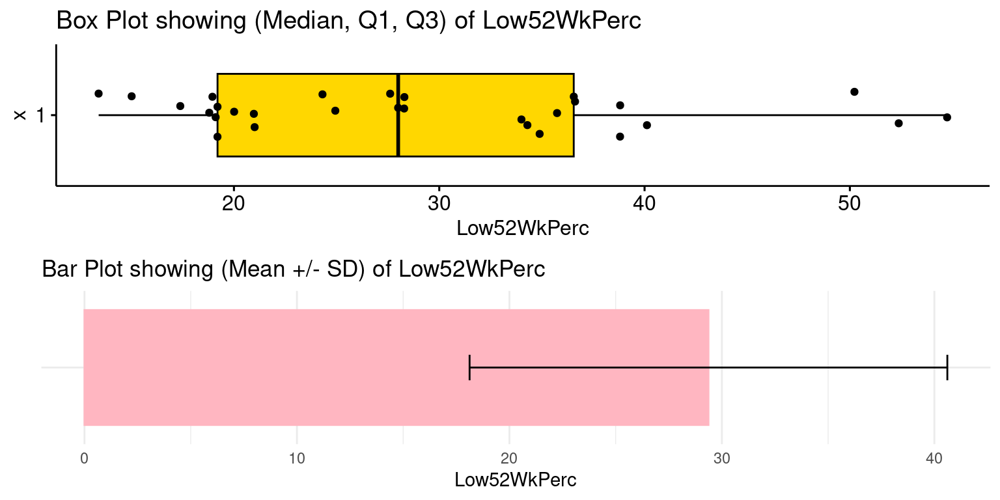
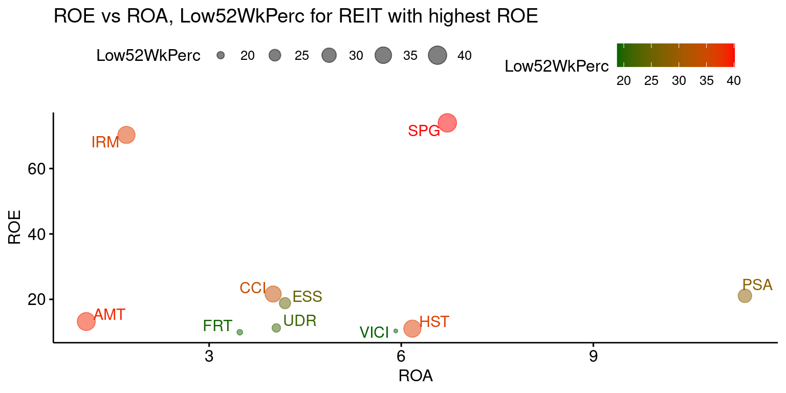

# Load the required libraries, suppressing annoying startup messages
library(dplyr, quietly = TRUE, warn.conflicts = FALSE) # For data manipulation
library(tibble, quietly = TRUE, warn.conflicts = FALSE) # For data manipulation
library(ggplot2, quietly = TRUE, warn.conflicts = FALSE) # For data visualization
library(ggpubr, quietly = TRUE, warn.conflicts = FALSE) # For data visualization
library(gsheet, quietly = TRUE, warn.conflicts = FALSE) # For Google Sheets
library(rmarkdown, quietly = TRUE, warn.conflicts = FALSE) # For writing
library(knitr, quietly = TRUE, warn.conflicts = FALSE) # For tables
library(kableExtra, quietly = TRUE, warn.conflicts = FALSE) # For tablesLive Case (2): REITs in the S&P500
Chapter 18, Last updated: Dec 30, 2023
Objective
A1) Role Play?
Greetings Data Commandos!
Imagine you’re in the bustling hub of the world’s most elite consulting firms, revered across the corporate spectrum.
A prestigious investment fund is ready to channel $1 Million into the US finance sector. They’ve enlisted your expertise to delve into the 29 REITs within the Finance sector of the S&P500.
Real Estate Investment Trusts, commonly known as REITs, offer a distinctive way to engage with real estate markets without the cumbersome process of directly owning property.
Your mission? Allocate $1 Million to the “best” REIT(s). Pinpoint the top 1, 2 or 3 REITs that present the most promising short-term trading opportunities. Dive in and make those data-driven decisions!
A2) What are learning objectives for you?
- Revisit and solidify your knowledge of R programming, acquired or expected to be acquired in earlier courses.
- Enhance your proficiency in data management and manipulation using the
dplyrpackage and other functions in R. - Sharpen your skills in data visualization leveraging the
ggplot2,ggpubrand related packages in R. - Master the art of addressing a data-centric business challenge while embodying the role of a Consulting Team.
- Cultivate the capability to compellingly present your solutions to a discerning yet just audience.
Setup S&P 500 REIT Data
1. Load some useful R packages
2. Read S&P500 data (to derive REIT data)
# Read S&P500 stock data present in a Google Sheet.
library(gsheet)
prefix <- "https://docs.google.com/spreadsheets/d/"
sheetID <- "14mUlNNpeuV2RouT9MKaAWKUpvjRijzQu40DdWJgyKPQ"
url500 <- paste(prefix,sheetID) # Form the URL to connect to
sp500 <- gsheet2tbl(url500) # Read it into a tibble called sp5003. Rename Columns
# Define a mapping of new column names
new_names <- c(
"Date", "Stock", "StockName", "Sector", "Industry",
"MarketCap", "Price", "Low52Wk", "High52Wk",
"ROE", "ROA", "ROIC", "GrossMargin",
"OperatingMargin", "NetMargin", "PE",
"PB", "EVEBITDA", "EBITDA", "EPS",
"EBITDA_YOY", "EBITDA_QYOY", "EPS_YOY",
"EPS_QYOY", "PFCF", "FCF",
"FCF_QYOY", "DebtToEquity", "CurrentRatio",
"QuickRatio", "DividendYield",
"DividendsPerShare_YOY", "PS",
"Revenue_YOY", "Revenue_QYOY", "Rating"
)
# Rename the columns using the new_names vector
colnames(sp500)<-new_names3. Select REIT data
The S&P500 shares are divided into multiple Sectors. Each stock belongs to a unique sector. Thus, it makes sense to model Sector as a factor() variable.
Set Sector, Rating data columns to be factor data types.
sp500$Sector <- as.factor(sp500$Sector)
sp500$Rating <- as.factor(sp500$Rating)C6. The Finance Sector within the S&P500
The Finance sector plays a pivotal role in the overall U.S. economy. Its performance is often closely watched by economists and investors alike, given its profound impact on lending, investment, and overall economic growth. Over the years, regulatory changes, monetary policy, and global economic events have significantly influenced this sector, making it a dynamic and critical component of the S&P 500.
We focus on investment opportunities within the Finance sector of the S&P500.
- We want to determine the fundamentally strongest AND most reasonably priced shares for short-to-medium term investing.
- Industry: The Finance sector includes many industries within it.
For example:
Banks: JPMorgan Chase, Bank of America, and Wells Fargo, among others, represent the significant banking entities.
Insurance Companies: Companies like Berkshire Hathaway, Allstate operate in this sub-sector, offering a range of insurance products from property and casualty insurance to life insurance.
- We create a tibble named
finStocks, filtering the shares that belong to the Finance sector.
finStocks = sp500 %>%
filter(Sector=="Finance") - Industries within the Finance Sector
- The data shows that the Finance sector consists of a total of 92 companies that belong to different Industries.
- We set the Industry to be factor variable, since they can only assume unique levels.
finStocks$Industry <- as.factor(finStocks$Industry)- The following visualization summarizes the different Industries within the Finance Sector:
ggplot(data = finStocks,
aes(y = Industry)) +
geom_bar(aes(fill = Industry)) +
geom_text(stat='count',
aes(label=after_stat(count))) +
labs(title = "Stocks by Industry, within Finance Sector",
x = "No. of Stocks",
y = "Industry")- Market Capitalization (Billions of USD) of Industries within the Finance Sector
FinanceMarketCap <- finStocks %>%
mutate(MarketCap_Billions = round(MarketCap/1000000000, 2)) %>%
group_by(Industry) %>%
summarise(Market_Cap_BillionUSD = sum(MarketCap_Billions, na.rm = TRUE)) %>%
arrange(-Market_Cap_BillionUSD)
# Create a summary row
summary_row <- tibble(
Industry = "Total",
Market_Cap_BillionUSD = sum(FinanceMarketCap$Market_Cap_BillionUSD)
)
# Append the summary row to the result
FinanceMarketCap <- bind_rows(FinanceMarketCap, summary_row)
# Render the table
FinanceMarketCap %>%
kable("html", caption = "Market Capitalization (Billions of USD) of Finance Sector") %>%
kable_styling()| Industry | Market_Cap_BillionUSD |
|---|---|
| Major Banks | 1293.69 |
| Real Estate Investment Trusts | 962.93 |
| Property/Casualty Insurance | 954.96 |
| Investment Banks/Brokers | 719.18 |
| Investment Managers | 385.34 |
| Multi-Line Insurance | 358.41 |
| Insurance Brokers/Services | 245.39 |
| Finance/Rental/Leasing | 219.78 |
| Regional Banks | 175.21 |
| Life/Health Insurance | 48.90 |
| Real Estate Development | 28.37 |
| Total | 5392.16 |
- We focus on investment opportunities within a particular Industry – Real Estate Investment Trusts.
C7. Stock Prices, as of 29Dec2023
- Stock Prices relative to their 52 Week Low and 52 Week High
We want to analyze stock prices relative to their 52 Week Low and 52 Week High respectively, to understand their relative price attractiveness.
For this purpose, we create some additional data columns.
finStocks = sp500 %>%
filter(Sector=="Finance") %>%
mutate(Low52WkPerc = round((Price - Low52Wk)*100 / Low52Wk,2)) %>%
mutate(High52WkPerc = round((High52Wk - Price)*100 / Low52Wk,2)) %>%
mutate(MarketCap_Billions = round(MarketCap/1000000000, 2))Here, a new column named
Low52WkPercis being added. The column contains the percentage change between the current price (Price) and its 52-week low (Low52Wk). The formula used is: \[Low52WkPerc = \frac{(CurrentPrice - 52WeekLow)*100}{52WeekLow}\]Another column named
High52WkPercrepresents the percentage change between the 52-week high (High52Wk) and the current price (Price).We round off the data to two decimal places for clarity.
finStocks$Price <- round(finStocks$Price,1)
finStocks$Low52Wk <- round(finStocks$Low52Wk,1)
finStocks$High52Wk <- round(finStocks$High52Wk,1)D. REITs in the S&P500, as of 29Dec2023
Real Estate Investment Trusts, commonly known as REITs, stand as a cornerstone for investors seeking diversification in their portfolios. These entities offer a distinctive way to engage with real estate markets without the cumbersome process of directly owning property.
In our analysis of the Finance sector, we want to focus attention on a particular Industry within it – Real Estate Investment Trusts.
Recall: We want to determine the fundamentally strongest AND most reasonably priced, top 1-3 REITs for short-to-medium term investing USD 1 Million.
D1. Key Characteristics of REITs:
Income Distribution: One of the most touted features of REITs is their consistent income flow. U.S. tax regulations mandate REITs to distribute at least 90% of their taxable income as dividends. While this can be enticing due to potentially higher yields, it also poses a risk. The high dividend mandate leaves REITs with less retained earnings, potentially hindering their growth or making them more dependent on external financing.
Liquidity versus Direct Ownership: REITs offer a stark contrast to traditional real estate investments in terms of liquidity. While selling a property might entail prolonged durations, hefty transaction costs, and price negotiations, REIT shares can be traded with the agility of stocks. This flexibility, however, comes at the cost of exposure to stock market volatility.
Tax Implications: The unique tax structure of REITs is a double-edged sword. While they can dodge corporate taxes by abiding by stringent regulations, such as the income distribution clause, shareholders often have to pay higher individual taxes on REIT dividends compared to qualified stock dividends.
Sectoral Diversification: REITs don’t just represent traditional brick-and-mortar assets. From data centers to timberlands, they span diverse sectors, potentially providing portfolio diversification. However, the granularity in sectors necessitates that investors be judicious and knowledgeable about the specific type of real estate exposure they’re obtaining.
D2. Major U.S. REITs:
American Tower Corporation (AMT): Pioneering the realm of communication infrastructures, AMT emphasizes cell tower operations. While it highlights the evolution of REITs beyond traditional confines, it also underscores the need for REIT investors to comprehend tech industry dynamics, given its tech infrastructure focus.
Prologis (PLD): With a niche in logistics and industrial real estate, Prologis stands out in the age of e-commerce. The company’s assets, mainly distribution centers, are strategically situated in prime markets. However, the increasing demand for same-day deliveries and supply chain revamps could challenge Prologis’ portfolio.
Simon Property Group (SPG): Catering predominantly to retail spaces, SPG faces the arduous task of reinventing malls in an era where brick-and-mortar stores battle online retailers. The company’s resilience in nurturing mixed-use spaces might determine its long-term growth trajectory.
Equity Residential (EQR): As urbanization continues, EQR’s focus on high-density urban areas might seem lucrative. But, with telecommuting trends and urban exodus, it’s pivotal to monitor how urban rental landscapes evolve.
Digital Realty Trust (DLR): In the digital age, DLR taps into the data economy by majoring in data centers. While the tech boom supports such endeavors, DLR’s growth could be contingent on global data regulations and tech infrastructure demands.
References: Please consider looking into the following well-known sources, which regularly publish information about REITs.
National Association of Real Estate Investment Trusts (NAREIT) – This organization is a representative voice for REITs in the U.S. They frequently release reports, articles, and data on the REIT industry.
Major Financial News Outlets - Outlets like The Wall Street Journal, Financial Times, and Bloomberg often feature articles on REITs, especially in their real estate or investment sections.
The Journal of Real Estate Finance and Economics - This academic journal covers a wide range of topics in real estate, including REITs.
D3. REITs in the S&P500:
- We create a tibble named
REITfrom within the Finance sector tibblefinStocks. Specifically, we filter the shares that belong to theReal Estate Investment TrustsIndustry, within the Finance sector.
REIT <- finStocks %>%
filter(Industry == 'Real Estate Investment Trusts')- The following table lists REITs within the Finance sector of the S&P500
REIT %>%
select(Stock, StockName, Price, MarketCap_Billions) %>%
arrange(desc(MarketCap_Billions)) %>%
kable("html", caption = "REITs within Finance Sector of S&P500") %>%
kable_styling()| Stock | StockName | Price | MarketCap_Billions |
|---|---|---|---|
| PLD | Prologis, Inc. | 133.3 | 126.00 |
| AMT | American Tower Corporation (REIT) | 216.0 | 101.00 |
| EQIX | Equinix, Inc. | 805.6 | 75.61 |
| PSA | Public Storage | 305.1 | 53.63 |
| CCI | Crown Castle Inc. | 115.2 | 49.96 |
| WELL | Welltower Inc. | 90.2 | 49.91 |
| SPG | Simon Property Group, Inc. | 142.6 | 46.53 |
| O | Realty Income Corporation | 57.4 | 41.57 |
| DLR | Digital Realty Trust, Inc. | 134.6 | 40.76 |
| EXR | Extra Space Storage Inc | 160.4 | 33.87 |
| VICI | VICI Properties Inc. | 31.9 | 32.98 |
| SBAC | SBA Communications Corporation | 253.8 | 27.37 |
| AVB | AvalonBay Communities, Inc. | 187.2 | 26.59 |
| WY | Weyerhaeuser Company | 34.8 | 25.38 |
| EQR | Equity Residential | 61.1 | 23.22 |
| ARE | Alexandria Real Estate Equities, Inc. | 126.8 | 22.03 |
| INVH | Invitation Homes Inc. | 34.1 | 20.87 |
| VTR | Ventas, Inc. | 49.9 | 20.63 |
| IRM | Iron Mountain Incorporated (Delaware) | 70.0 | 20.43 |
| ESS | Essex Property Trust, Inc. | 247.9 | 15.91 |
| MAA | Mid-America Apartment Communities, Inc. | 134.5 | 15.69 |
| HST | Host Hotels & Resorts, Inc. | 19.5 | 13.73 |
| KIM | Kimco Realty Corporation (HC) | 21.3 | 13.21 |
| UDR | UDR, Inc. | 38.3 | 12.59 |
| REG | Regency Centers Corporation | 67.0 | 12.44 |
| BXP | Boston Properties, Inc. | 70.2 | 11.01 |
| PEAK | Healthpeak Properties, Inc. | 19.8 | 10.93 |
| CPT | Camden Property Trust | 99.3 | 10.60 |
| FRT | Federal Realty Investment Trust | 103.0 | 8.48 |
- Consider the summary statistics of the Market Capitalization of the REITs within the S&P500
REIT %>% summarise(
N = n(),
Mean = mean(MarketCap_Billions),
SD = sd(MarketCap_Billions),
Median = median(MarketCap_Billions),
Q1 = quantile(MarketCap_Billions, 0.25),
Q3 = quantile(MarketCap_Billions, 0.75),
Min = min(MarketCap_Billions),
Max = max(MarketCap_Billions),
Sum = sum(MarketCap_Billions)
) %>%
round(2) %>%
kable("html", caption = "Summary Statistics of Market Capitalizaiton of REITs (Billion USD)") %>%
kable_styling()| N | Mean | SD | Median | Q1 | Q3 | Min | Max | Sum |
|---|---|---|---|---|---|---|---|---|
| 29 | 33.2 | 27.7 | 23.22 | 13.73 | 41.57 | 8.48 | 126 | 962.93 |
- As can be seen, the S&P500 consists of 29 REITs.
Recall.. A prestigious investment fund is ready to channel $1 Million into the US finance sector. They’ve enlisted your expertise to delve into the 29 REITs within the Finance sector of the S&P500.
Recall Your mission? Pinpoint the top 1, 2 or 3 REITs that present the most promising short-term trading opportunities. How will you allocate your investment capital of USD 1 Million? Dive in and make those data-driven decisions!
- We want to determine the fundamentally strongest AND most reasonably priced shares for short-to-medium term investing.
Well done! Our data is now ready for analysis!!
There are 12 number of of stocks in the Industry REIT
Select the Specific Coulumns from the filtered dataframe ts (Industry REIT)
ts2 <- REIT %>%
select(Date, Stock, StockName, MarketCap_Billions, Price,Low52Wk, High52Wk,
ROE, ROA,ROIC,GrossMargin, GrossMargin,
NetMargin, Rating)
colnames(ts2) [1] "Date" "Stock" "StockName"
[4] "MarketCap_Billions" "Price" "Low52Wk"
[7] "High52Wk" "ROE" "ROA"
[10] "ROIC" "GrossMargin" "NetMargin"
[13] "Rating" Arrange the Dataframe by ROE
ts3 <- ts2 %>% arrange(desc(ROE))Significance of 52-Week Low Price
The 52-week low price of a stock is a significant indicator for multiple reasons, especially when considering shares listed on major indices like the S&P 500. Here’s why this metric is noteworthy:
Historical Perspective: The 52-week low offers a snapshot of how low the stock has traded over the past year relative to its current price, providing context about its price journey.
Potential Entry Point: Some investors view stocks that are near their 52-week low as potential buying opportunities, under the assumption that the stock might be undervalued and could rebound.
Psychological Level: Stocks approaching their 52-week low can be seen as testing a significant support level. If a stock consistently fails to breach its 52-week low, it might indicate that the market values the stock at that level, and it’s resistant to falling below it.
Basis for Technical Analysis: For technical analysts or traders, the 52-week low serves as a critical reference point. A consistent breach of this level might signify a bearish trend, while a rebound can indicate potential recovery.
Yield Implications for Dividend Stocks: For dividend-paying stocks, a price near the 52-week low (assuming the dividend hasn’t been cut) would imply a higher dividend yield, potentially making it attractive for income-seeking investors.
- Note of Caution: While the 52-week low is a valuable reference point, it’s essential to interpret it in conjunction with other financial and market indicators. A stock trading near its 52-week low doesn’t automatically make it a good buy, just as a stock trading near its 52-week high doesn’t automatically make it overvalued. Comprehensive analysis, should inform investment decisions.
Mutate a data column called (Low52WkPerc), then show top 10 ROE stocks
ts4 <- ts3 %>% mutate(Low52WkPerc = round((Price - Low52Wk)*100 / Low52Wk,2))
head(ts4[,c(1:3,5)],10)# A tibble: 10 × 4
Date Stock StockName Price
<chr> <chr> <chr> <dbl>
1 29Dec2023 SPG Simon Property Group, Inc. 143.
2 29Dec2023 IRM Iron Mountain Incorporated (Delaware) 70
3 29Dec2023 CCI Crown Castle Inc. 115.
4 29Dec2023 PSA Public Storage 305.
5 29Dec2023 ESS Essex Property Trust, Inc. 248.
6 29Dec2023 AMT American Tower Corporation (REIT) 216
7 29Dec2023 UDR UDR, Inc. 38.3
8 29Dec2023 HST Host Hotels & Resorts, Inc. 19.5
9 29Dec2023 VICI VICI Properties Inc. 31.9
10 29Dec2023 FRT Federal Realty Investment Trust 103 Summary Statistics of Low52WkPerc (Price rel. to 52-Week Low)
summaryStats <- ts4 %>% summarise(
N = n(),
Mean = mean(Low52WkPerc),
SD = sd(Low52WkPerc),
Median = median(Low52WkPerc),
Q1 = quantile(Low52WkPerc, 0.25),
Q3 = quantile(Low52WkPerc, 0.75),
Min = min(Low52WkPerc),
Max = max(Low52WkPerc)
)
Low52WkPercQ1 <- summaryStats$Q1 # Save Q1 of Low52WkPerc
summaryStats %>%
round(2) %>%
kable("html", caption = "Summary Statistics of Low52WkPerc (Price rel. to 52-Week Low)") %>%
kable_styling()| N | Mean | SD | Median | Q1 | Q3 | Min | Max |
|---|---|---|---|---|---|---|---|
| 29 | 31.71 | 11.41 | 30.26 | 22.49 | 38.34 | 16.16 | 58.5 |
Low52WkPerc for all the REIT Stocks, as shown below

Inexpensive Stocks with Low52WkPerc < Q1(Low52WkPerc)
ts4 %>%
select(Stock, StockName, Price, Low52Wk, Low52WkPerc) %>%
filter(Low52WkPerc < Low52WkPercQ1) %>%
arrange(Low52WkPerc)%>%
kable("html", caption = "Inexpensive Stocks with Low52WkPerc < Q1(Low52WkPerc)") %>%
kable_styling()| Stock | StockName | Price | Low52Wk | Low52WkPerc |
|---|---|---|---|---|
| EQR | Equity Residential | 61.1 | 52.6 | 16.16 |
| MAA | Mid-America Apartment Communities, Inc. | 134.5 | 115.6 | 16.35 |
| INVH | Invitation Homes Inc. | 34.1 | 28.5 | 19.65 |
| VICI | VICI Properties Inc. | 31.9 | 26.6 | 19.92 |
| CPT | Camden Property Trust | 99.3 | 82.8 | 19.93 |
| FRT | Federal Realty Investment Trust | 103.0 | 85.3 | 20.75 |
| AVB | AvalonBay Communities, Inc. | 187.2 | 153.1 | 22.27 |
Summary Statistics of Return on Equity (ROE)
summaryStats <- ts4 %>% summarise(
N = n(),
Mean = mean(ROE, na.rm = TRUE),
SD = sd(ROE, na.rm = TRUE),
Median = median(ROE, na.rm = TRUE),
Q1 = quantile(ROE, 0.25, na.rm = TRUE),
Q3 = quantile(ROE, 0.75, na.rm = TRUE),
Min = min(ROE, na.rm = TRUE),
Max = max(ROE, na.rm = TRUE)
)
ROE_Q3 <- summaryStats$Q3
summaryStats %>%
round(2) %>%
kable("html", caption = "Summary Statistics of Return on Equity (ROE)") %>%
kable_styling()| N | Mean | SD | Median | Q1 | Q3 | Min | Max |
|---|---|---|---|---|---|---|---|
| 29 | 12.57 | 17.69 | 7.17 | 4.68 | 11.09 | 0.05 | 73.97 |
- ROE for all the Stocks in REIT, as shown below
Stocks with ROE > Q3(ROE)
ts4 %>%
select(Stock, StockName, Price, ROA, ROE, Low52Wk, Low52WkPerc) %>%
filter(ROE > ROE_Q3) %>%
arrange(desc(ROE)) %>%
kable("html", caption = "Stocks with ROE > Q3(ROE)") %>%
kable_styling()| Stock | StockName | Price | ROA | ROE | Low52Wk | Low52WkPerc |
|---|---|---|---|---|---|---|
| SPG | Simon Property Group, Inc. | 142.6 | 6.719684 | 73.96502 | 100.2 | 42.32 |
| IRM | Iron Mountain Incorporated (Delaware) | 70.0 | 1.708173 | 70.27600 | 48.9 | 43.15 |
| CCI | Crown Castle Inc. | 115.2 | 3.999484 | 21.61974 | 84.7 | 36.01 |
| PSA | Public Storage | 305.1 | 11.366645 | 21.07189 | 233.2 | 30.83 |
| ESS | Essex Property Trust, Inc. | 247.9 | 4.184376 | 18.83040 | 195.0 | 27.13 |
| AMT | American Tower Corporation (REIT) | 216.0 | 1.081369 | 13.21486 | 154.6 | 39.72 |
| UDR | UDR, Inc. | 38.3 | 4.049174 | 11.25438 | 31.0 | 23.55 |
Summary Statistics of Return on Equity (ROA)
summaryStats <- ts4 %>% summarise(
N = n(),
Mean = mean(ROA, na.rm = TRUE),
SD = sd(ROA, na.rm = TRUE),
Median = median(ROA, na.rm = TRUE),
Q1 = quantile(ROA, 0.25, na.rm = TRUE),
Q3 = quantile(ROA, 0.75, na.rm = TRUE),
Min = min(ROA, na.rm = TRUE),
Max = max(ROA, na.rm = TRUE)
)
ROA_Q3 <- summaryStats$Q3
summaryStats %>%
round(2) %>%
kable("html", caption = "Summary Statistics of Return on Equity (ROA)") %>%
kable_styling()| N | Mean | SD | Median | Q1 | Q3 | Min | Max |
|---|---|---|---|---|---|---|---|
| 29 | 3.43 | 2.31 | 3.38 | 1.74 | 4.18 | 0.02 | 11.37 |
- ROA for all the Stocks in REIT, as shown below
Stocks with ROA > Q3(ROA)
ts4 %>%
select(Stock, StockName, Price, ROA, ROE, Low52Wk, Low52WkPerc) %>%
filter(ROA > ROA_Q3) %>%
arrange(desc(ROA)) %>%
kable("html", caption = "Stocks with ROA > Q3(ROA)") %>%
kable_styling()| Stock | StockName | Price | ROA | ROE | Low52Wk | Low52WkPerc |
|---|---|---|---|---|---|---|
| PSA | Public Storage | 305.1 | 11.366645 | 21.071893 | 233.2 | 30.83 |
| SPG | Simon Property Group, Inc. | 142.6 | 6.719684 | 73.965022 | 100.2 | 42.32 |
| HST | Host Hotels & Resorts, Inc. | 19.5 | 6.173597 | 11.036398 | 14.5 | 34.48 |
| VICI | VICI Properties Inc. | 31.9 | 5.914200 | 10.331764 | 26.6 | 19.92 |
| MAA | Mid-America Apartment Communities, Inc. | 134.5 | 5.155324 | 9.662317 | 115.6 | 16.35 |
| SBAC | SBA Communications Corporation | 253.8 | 4.886459 | NA | 185.2 | 37.04 |
| AVB | AvalonBay Communities, Inc. | 187.2 | 4.534148 | 8.060873 | 153.1 | 22.27 |
ROE versus ROA and colored by Price rel. to 52 Week Low
top10 <-
ts4 %>%
select(Stock, Price, Low52Wk, Low52WkPerc, ROA, ROE) %>%
arrange(desc(ROE))%>%
slice(1:10)
top10$name <- top10$Stock
ggscatter(top10,
x = "ROA",
y = "ROE",
size = "Low52WkPerc",
color = "Low52WkPerc",
alpha = 0.5,
label = "name",
repel = TRUE,
title = "ROE vs ROA, Low52WkPerc for REIT with highest ROE") +
gradient_color(c("darkgreen", "red"))
Summary Statistics of All key variables in REIT Services
ts3 <- na.omit(ts3)
ROESum <- ts3 %>%
summarise(
Mean = mean(ROE),
Stdev = sd(ROE),
Median= median(ROE),
Q1 = quantile(ROE, probs = 0.25, na.rm = TRUE),
Q3 = quantile(ROE, probs = 0.75, na.rm = TRUE),
Min = min(ROE),
max = max(ROE)
)
ROESum <- round(ROESum,2)
ROASum <- ts3 %>%
summarise(
Mean = mean(ROA),
Stdev = sd(ROA),
Median= median(ROA),
Q1 = quantile(ROA, probs = 0.25, na.rm = TRUE),
Q3 = quantile(ROA, probs = 0.75, na.rm = TRUE),
Min = min(ROA),
max = max(ROA)
)
ROASum <- round(ROASum,2)
ROICSum <- ts3 %>%
summarise(
Mean = mean(ROIC),
Stdev = sd(ROIC),
Median= median(ROIC),
Q1 = quantile(ROIC, probs = 0.25, na.rm = TRUE),
Q3 = quantile(ROIC, probs = 0.75, na.rm = TRUE),
Min = min(ROIC),
max = max(ROIC)
)
ROICSum <- round(ROICSum,2)
GrossMarginSum <- ts3 %>%
summarise(
Mean = mean(GrossMargin),
Stdev = sd(GrossMargin),
Median= median(GrossMargin),
Q1 = quantile(GrossMargin, probs = 0.25, na.rm = TRUE),
Q3 = quantile(GrossMargin, probs = 0.75, na.rm = TRUE),
Min = min(GrossMargin),
max = max(GrossMargin)
)
GrossMarginSum <- round(GrossMarginSum,2)
NetMarginSum <- ts3 %>%
summarise(
Mean = mean(NetMargin),
Stdev = sd(NetMargin),
Median= median(NetMargin),
Q1 = quantile(NetMargin, probs = 0.25, na.rm = TRUE),
Q3 = quantile(NetMargin, probs = 0.75, na.rm = TRUE),
Min = min(NetMargin),
max = max(NetMargin)
)
NetMarginSum <- round(NetMarginSum,2)
Metrics <- c("ROE","ROA","ROIC","GrossMargin","NetMargin")
ftab <- rbind(ROESum, ROASum, ROICSum, GrossMarginSum, NetMarginSum)
ftab <- cbind(Metrics, ftab)
ftab Metrics Mean Stdev Median Q1 Q3 Min max
1 ROE 12.57 17.69 7.17 4.68 11.09 0.05 73.97
2 ROA 3.38 2.33 3.28 1.73 4.08 0.02 11.37
3 ROIC 3.75 2.50 3.48 1.97 4.75 0.02 11.82
4 GrossMargin 37.86 18.01 36.15 27.81 44.50 -1.22 99.17
5 NetMargin 22.35 15.27 22.29 10.32 29.68 0.11 68.69